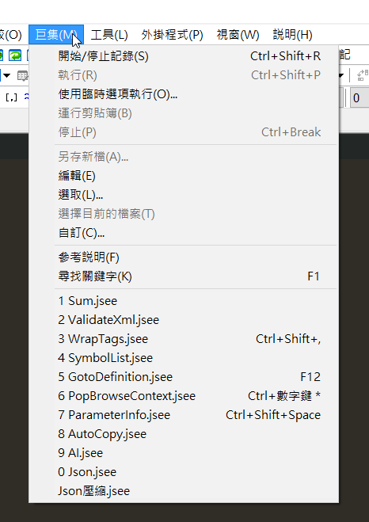
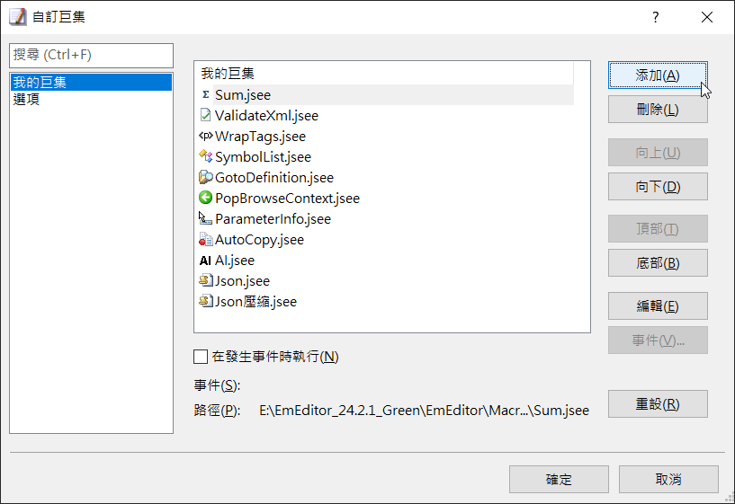

工作的時候拿到了超過 1GB 的 JSON 檔，用 VSCode 和 Notepad++ 雖然都能開啟，但速度真的慢，而且 JSON 太大根本無法格式化。於是開始找能開啟大檔案的軟體。
1. EmEditor 軟體介紹
EmEditor 是一款專為處理大型檔案設計的文字編輯器，幾個實際有感的功能：
- 高效能：能處理超過 248GB 的大型檔案。
- 多功能：支援多種編碼、語法高亮、正規表示式。
- 可自訂：有豐富的外掛與自訂選項。
- CSV/TSV 支援：試算表處理能力不錯。
- 巨集與腳本：可以錄製巨集，也能執行 JavaScript 腳本。
- 多語言介面：包含中文。
處理大型 JSON 最有感的地方：開啟速度比 VSCode 快很多，還可以透過腳本做壓縮和格式化。
2. JSON 壓縮與格式化腳本
壓縮腳本
1 | document.selection.SelectAll(); |
運作方式：
SelectAll()全選文字。JSON.parse()把文字解析成 JavaScript 物件。JSON.stringify()轉回 JSON 字串，沒有任何縮排——也就是壓縮後的結果。- 直接替換編輯器裡的文字。
格式化腳本
1 | document.selection.SelectAll(); |
跟壓縮腳本一樣的邏輯，差別在 JSON.stringify() 多了兩個參數：
null：不使用替換函式。'\t'：用 Tab 縮排，讓 JSON 變成人眼可讀的格式。
3. 在 EmEditor 中使用腳本
- 開啟 EmEditor，載入 JSON 檔案。
- 點擊「巨集」>「新增巨集」，在編輯頁面貼上腳本內容。
- 儲存成
.jsee檔，取個描述性的名稱（例如JSON壓縮.jsee）。 - 點擊「巨集」>「自訂」。

- 點擊新增，把剛才存好的
.jsee檔加進去。
4. 實用提醒
- 幫這兩個腳本各設一組快捷鍵，用起來會快很多。
- 處理超大檔案時，可以考慮調高 EmEditor 的記憶體使用上限。
- 超大型 JSON 可以搭配 EmEditor 的「大檔案控制器」分段處理。
本部落格所有文章除特別聲明外，均採用CC BY-NC-SA 4.0 授權協議。轉載請註明來源 kyosora 筆記！
評論